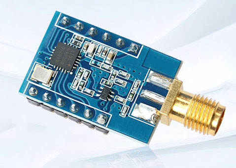
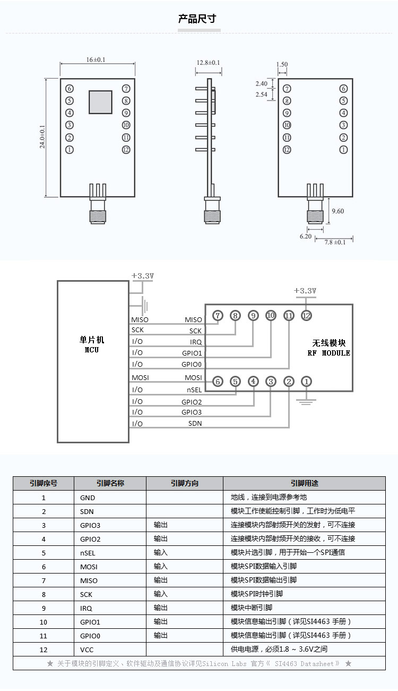

主要用在智能电表(802.15.4g & MBus)、遥控、家庭安全和告警、车库和大门开启、遥测、家庭自动化、传感器网络、健康监视等


Silicon Labs公司的Si446x系列是高性能低电流的119MHz~1050MHz收发器，是EZRadioPRO系列中一员，包括完整的发送器和接收器。 灵敏度为-126dBm 工作频率119MHz~960MHz 最大输出功率+20dBm PA支持+27dBm或+30dBm 采用(G)FSK，4(G)FSK，(G)MSK,OOK和ASK调制 数据速率从100bps~1Mbps 工作电压1.8V~3.6V 关断电流30nA 待机电流50nA 主要用在智能电表(802.15.4g & MBus)、遥控、家庭安全和告警、车库和大门开启、遥测、家庭自动化、传感器网络、健康监视等。
Silicon Labs的Si446x是一款高性能，低电流的收发器，覆盖了从119MHz~1050MHz的sub-GHz频段。该收发器是 EZRadioPRO 系列产品的一部分，其中包括完整的发射器，接收器和收发器系列，覆盖广泛的应用范围。所有部件具有出色的灵敏度（为-126dBm），同时实现了较低的工作和待机电耗。
©2021– by Joe